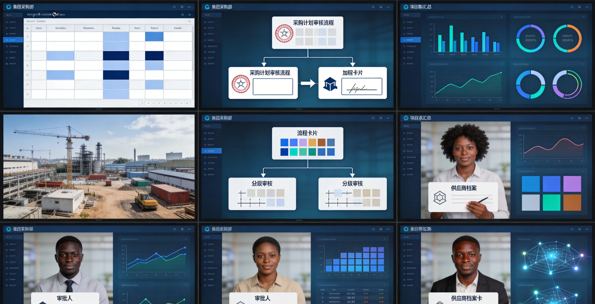

Le Système de Gestion des Achats est une plateforme d'achat de bout en bout pour les projets d'ingénierie. Face aux défis des projets à l'étranger (achats transfrontaliers volumineux, demandes dispersées, approbations lentes, prix opaques), le système intègre l'agrégation des demandes, la planification, la validation multi-niveaux, la négociation et la gestion des LPO, helping les entreprises à optimiser les décisions et à réduire les risques de la chaîne d'approvisionnement.
Caractéristiques Clés
Le système couvre demande, planification, validation, négociation, gestion LPO, justificatifs et bibliothèque de prix — modules cœur.
Demandes d'Achat
Affichage centralisé de toutes les demandes d'achat des projets.
Planification
Agrégation des besoins en plans d'achat avec budget, calendrier et responsables.
Validation
Soumission des plans et LPO aux responsables concernés pour validation par étapes selon le workflow prédéfini.
Négociation
Après validation du plan, négociation avec les fournisseurs potentiels pour confirmer prix et détails.
Gestion des LPO
Génération formelle de LPO à partir des négociations et émission aux fournisseurs sélectionnés, support de la validation, annulation et suivi du statut.
Justificatifs
Génération de justificatifs à partir des LPO approuvés (plans, LPO, entrées), avec impression en lot. Le système n'affiche pas le statut 'payé' — les paiements sont effectués hors ligne.
Bibliothèque de Prix
Historique des prix d'achat de tous les matériaux, fournissant une référence pour la planification et la négociation.
Architecture du Système
Procurement Flow
Architecture d'achat de bout en bout : demande → planification → validation → négociation → émission LPO → liaison entrée. Couplage profond avec le Système de Gestion des Matériaux pour une boucle fermée achat-entrée-réquisition, avec règlement multi-devises et suivi complet des achats transfrontaliers.
Scénarios d'Application
Adapté à l'agrégation multi-projets des demandes, au contrôle de la planification et de la validation, à la négociation fournisseurs et à la gestion des LPO et justificatifs.
Agrégation Multi-Projets
Affichage centralisé de toutes les demandes d'achat avec filtrage et analyse multi-dimensionnels.
Planification & Validation
Agrégation des besoins en plans avec budget et jalons, validation par étapes selon le workflow, piste d'audit complète.

Négociation Fournisseurs
Après validation, négociation avec les fournisseurs potentiels pour confirmer prix et détails, avec historique multi-tours.
LPO & Justificatifs
Génération de LPO à partir des négociations et émission aux fournisseurs, support validation, annulation et suivi statut ; production de justificatifs avec impression en lot.
Avantages, Services et Cas Clients
Avantages et Valeur
Numérisation Complète
Processus en ligne de la réquisition à l'exécution de la LPO, gestion en boucle fermée.
Multi-Devises Transfrontalier
Supporte le suivi des achats transfrontaliers et le règlement multi-devises, avec gestion par devise de projet.
Intégration Entrepôt
Intégration profonde avec le Système de Gestion des Matériaux pour la boucle achat-entrée-réquisition.
Évaluation Fournisseurs
Mise en place d'un système d'évaluation pour筛选 les fournisseurs fiables et réduire les risques.
Implémentation, Livraison et Assurance
Analyse des Besoins
Étude des processus d'achat et de la structure d'approvisionnement pour un plan sur mesure.
Déploiement
Support du déploiement sur site et cloud, adapté aux besoins d'achat transfrontalier.
Formation & Lancement
Formation échelonnée administrateurs/acheteurs/fournisseurs pour un démarrage réussi.
MCO Continue
Support technique 24/7 avec mises à jour régulières.